Document Class: Court Decisions
UN document class | Court Decisions | |||
subclass | Judgment / Order Description: formal decision or specific determination following a legal proceeding. Structures are highly formalized. Advisory Opinion Description: Opinion rendered by a court or adjudicating body upon request. | |||
AKN4UN | AKN | AKN4UN | UN Document | AKN4UN |
documentType | subtype | sub-class | @name subclass mandatory | |
value is prescribed | value is suggested | |||
court decisions | <judgment> | decision | judgment | judgment |
order | order | |||
advisory opinion | advisoryOpinion | |||
function | Court of law or adjudicating authority formal decision or specific determination following a legal proceeding. Function court of law or adjudicating authority formal decision or specific determination following a legal proceeding. Structure typical narrative of judgments is often divided in background, introduction, motivation and decision. | |||
authors | United Nations Appeals Tribunal – International Court of Justice | |||
editors | Registry | |||
sample documents | UNAT Judgements UNAT Orders | |||
Caveat. What follows is the modelling and description of the "Court Decision Document Class" which is the logical component of the court decision publication in which a "court decision" may appear during its lifecycle.
The Court Decision Class is not specific to the court decision of any organization in particular. It will list all the possible characteristics that a court decision may have across all the UN organizations, since the objective is to cover all the variances that may exist. The description and modelling of the publications in which a court decision may be published is presented in the "Publication Document Class".
The Court Decision Class will have to be localised by the different organizations, based on their specific editorial and style traditions, by selecting only the elements that are required to model all the relevant structural and semantic parts of any specific typology of court decision.
Please note that the XML examples provided in the next sections should not be considered complete. Examples show only the essential structural elements of the mark-up and only the ones relevant in a specific context without any semantic or presentation markup in order to keep the XML "humanly’" readable.
Document Structure
Description
The structure of a report may have the following elements:
Header block Information about the parties, lawyers, judges, etc. | Always present |
Main Content Main body with the introduction of the trial, the facts, the motivations, etc. | Always present. |
Closing block Signature, the registration date, the result of the judgment,etc. | Always present. |
Annexes Annexes and attachments, especially if there is a dissenting opinion. | Not always present. |
Modelling
document type | <akomaNtoso> <judgment name="{AKN4UN:subclass}"> |
metadata | <meta> <identification source="#{manifestationAuthor99}"> </identification> </meta> |
cover page | <coverPage> (...) </coverPage> |
identification part | <header> (...) </header> |
body block | < judgmentBody> (...) <judgmentBody> |
conclosing block | <conclusions> ….. </conclusions> |
</judgment> </akomaNtoso> | |
Examples
Some practical examples of the Akoma Ntoso markup of the main blocks of a verbatim record.
document type | <akomaNtoso> <judgment name="judgment"> | |
cover page | <coverPage> (...) </coverPage> | |
identification part | <header> (...) </header> | |
body block | <judgmentBody> (...) < judgmentBody> | |
conclosing block | <conclusions> ….. </conclusions> | 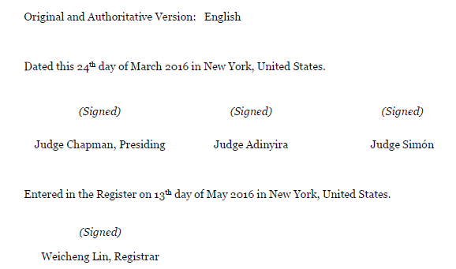 |
</judgment> </akomaNtoso> | ||
Header block
The <header> includes any matter found from the very beginning of a document up to where the <judgmentBody > begins. It may contain information about the parties, lawyers, judges, principal information about the number of judgment, type of court, jurisdiction, case number, procedure phases.
All judgments start with some or all the info below, not necessarily in the same order:
Jurisdiction
Number of judgment
Docket number/Case number
Neutral citations
Court name
Date of judgment
Judge
Lawyer
Type of document
Modelling <header>
For information about element specific usage, see 1.1..3 <header>.
Examples
source100 | |
modelling | <coverPage> <p><docAuthority xml:lang="eng" refersTo="#UNAT"> UNITED NATIONS APPEALS TRIBUNAL</docAuthority></p> <p><docAuthority xml:lang="fra" refersTo="#UNAT"> TRIBUNAL D’APPEL DES NATIONS UNIES </docAuthority></p> </coverPage> |
notes | |
source | 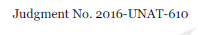 |
modelling | <header> <docType>Judgment</docType>No. <docNumber>2016-UNAT-610</docNumber> |
notes | |
source | |
modelling | <party refersTo="#abdel.rahman" as="#appellant">Abdel Rahman</party> (<role refersTo="#appellant">Appellant</role>) v.<party refersTo="#commisionerGeneralUNRWA" as="#respondent"> Commissioner-General<br> of the United Nations Relief and Works Agency for Palestine Refugees in the Near East </party> (<role refersTo="#respondent">Respondent</role>) |
notes | |
source | 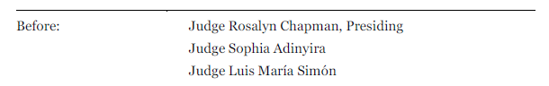 |
modelling | <p>Before: <judge refersTo="#rosalyn.chapman" as="#president">Judge Rosalyn Chapman</judge>, <role refersTo="#president">Presiding</role> <judge refersTo="#sophia.adinyra">Judge Sophia Adinyira</judge> <judge refersTo="#luis.maria.simon">Judge Luis María Simón</judge></p> |
notes | |
source | |
modelling | <p> Case No.: <docketNumber refersTo="#caseNumber">2012-419</docketNumber> Date: <docDate date="2016-03-24">24 March 2016</docDate> <role refersTo="#registrar">Registrar</role>: <person refersTo="#weicheng.lin" as="#registrar">Weicheng Lin</person></p> |
notes | |
source | 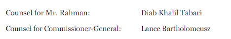 |
modelling | <p> Counsel for Mr. Rahman: <lawyer refersTo="#diab.khalil.tabari" for="#abdel.rahman">Diab Khalil Tabari</lawyer> Counsel for Commissioner-General: <lawyer refersTo="#lane.bartholomeusz" for="#commisionerGeneralUNRWA">Lance Bartholomeusz</lawyer></p> </header> |
notes | |
Body: <judgmentBody>
The judgment body <judgmentBody> includes any matter found after the <header> if any. It contains the main parts of a judicial decision with the introduction of the trial, the facts, the motivations, the decision, the remedies, the arguments.
The main body of judgements and orders is organized in paragraphs grouped hierarchically under different level of headings that may or may not be identified by letter or numbers:
Introduction (<introduction>)
Background (<background>)
Motivation (<motivation>)
Arguments (<arguments>)
Remedies (<remedies>)
Decision (<decision>)
The <judgmentBody> is strikingly different from the other body structures in AKN, because each of the elements allowed in the body (shown above) follows the same patterns as the <mainBody> element. So effectively each of these elements is a container for complete hierarchical and debate report-like structures.
< judgmentBody>
The <judgmentBody> elements is used to model documents in which a court of law or adjudicating authority makes a formal decision or specific determination following a legal proceeding. The structure reflects typical narrative of judicial orders.
The <judgmentBody> element is used for the judgment document type and has four sections (<introduction>, <background>, <motivation>, <arguments>, <remedies> and <decision>), which may be present one or more times, as needed, in no particular sequence to structurally describe a judgment. These sections may contain any kind of substructure (containers, blocks, hierarchical elements, etc.).
See in the table below the supported elements.
AKN4UN | AKN | body element | Supported elements |
Court Decisons | <judgment> | <judgmentBody> | Element type: judgmentBodyType arguments, background, decision, introduction, motivation, remedies |
Element group: hierElements alinea, article, book, chapter, clause, division, hcontainer, indent, level, list, paragraph, part, point, proviso, rule, section, subchapter, subclause, subdivision, sublist, subparagraph, subpart, subrule, subsection, subtitle, title, tome, transitional | |||
Element group: blockElements block, blockContainer, blockList, foreign, ol, p, table, tblock, toc, ul |
There are also very specific inline elements used in the judiciary system like <docJurisdiction> | <docketNumber> | <neutralCitation> | etc.
Some relevant analytical metadata may be included in the <judicial> metadata block for modeling citations to other legal sources as used by the judges to support their final decision and the final outcome of the judgment.
Examples
source | 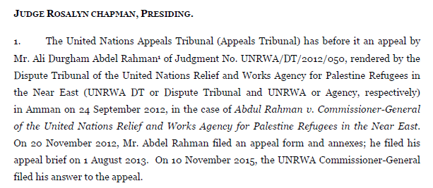 |
| <introduction> <division eId="div_1"> <heading>JUDGE ROSALYN CHAPMAN, PRESIDING.</heading> <paragraph eId="para_1"> <num>1.</num> <content> <p>The United Nations Appeals Tribunal (Appeals Tribunal) has before it an appeal by Mr. Ali Durgham Abdel Rahman1 of Judgment No. UNRWA/DT/2012/050, rendered by the Dispute Tribunal of the United Nations Relief and Works Agency for Palestine Refugees in the Near East (UNRWA DT or Dispute Tribunal and UNRWA or Agency, respectively) in Amman on 24 September 2012, in the case of Abdul Rahman v. Commissioner-General of the United Nations Relief and Works Agency for Palestine Refugees in the Near East. On 20 November 2012, Mr. Abdel Rahman filed an appeal form and annexes; he filed his appeal brief on 1 August 2013. On 10 November 2015, the UNRWA Commissioner-General filed his answer to the appeal.</p> </content> </paragraph> </division> </introduction> |
notes | |
source | 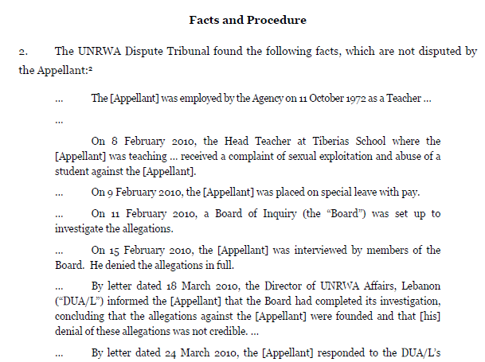 |
modelling | <background> <division> <heading>Facts and Procedure</heading> <paragraph> <num>2.</num> <content> <p> The UNRWA Dispute Tribunal found the following facts, which are not disputed by the Appellant: <embeddedStructure> <p> … The [Appellant] was employed by the Agency on 11 October 1972 as a Teacher …</p> <p> Omissis </p> <p> On 8 February 2010, the Head Teacher at Tiberias School where the [Appellant] was teaching … received a complaint of sexual exploitation and abuse of a student against the [Appellant].</p> <p>… On 9 February 2010, the [Appellant] was placed on special leave with pay.</p> <p>… On 11 February 2010, a Board of Inquiry (the "Board") was set up to investigate the allegations.</p> <p>… On 15 February 2010, the [Appellant] was interviewed by members of the Board. He denied the allegations in full.</p> <p>… By letter dated 18 March 2010, the Director of UNRWA Affairs, Lebanon ("DUA/L") informed the [Appellant] that the Board had completed its investigation, concluding that the allegations against the [Appellant] were founded and that [his] denial of these allegations was not credible. …</p> <p>… By letter dated 24 March 2010, the [Appellant] responded to the DUA/L’s letter of 18 March 2010, again denying the allegations against him.</p> </embeddedStructure> </p> </content> </paragraph> </division> </background> |
notes | |
source | 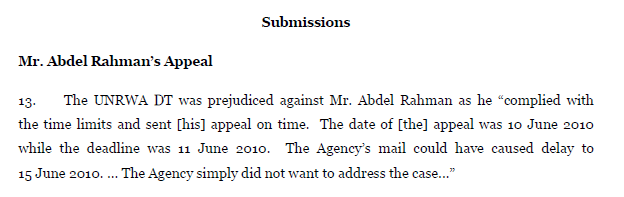 |
modelling | <remedies refersTo="#submissions"> <chapter> <heading>Submissions</heading> <division> <heading>Mr. Abdel Rahman’s Appeal</heading> <paragraph eId="para_13"> <num>13.</num> <content> <p> The UNRWA DT was prejudiced against Mr. Abdel Rahman as he <embeddedText> "complied with the time limits and sent [his] appeal on time. The date of [the] appeal was 10 June 2010 while the deadline was 11 June 2010. The Agency’s mail could have caused delay to 15 June 2010. … The Agency simply did not want to address the case..." </embeddedText> The Commissioner-General’s Answer</p> </content> </paragraph> |
notes | |
source | 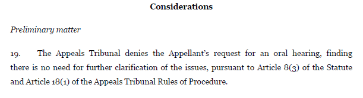 |
modelling | <motivation> <chapter> <heading>Considerations</heading> <division> <heading>Preliminary matter</heading> <paragraph eId="para_19"> <num>19.</num> <content> <p> The Appeals Tribunal denies the Appellant’s request for an oral hearing, finding there is no need for further clarification of the issues, pursuant to Article 8(3) of the Statute and Article 18(1) of the Appeals Tribunal Rules of Procedure.</p> </content> </paragraph> </division> </chapter> |
notes | |
source | 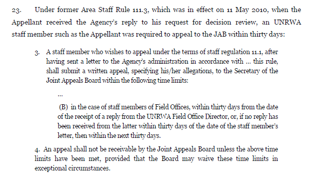 |
modelling | <paragraph eId="para_23"> <num>23.</num> <content> <p> Under former Area Staff Rule 111.3, which was in effect on 11 May 2010, when the Appellant received the Agency’s reply to his request for decision review, an UNRWA staff member such as the Appellant was required to appeal to the JAB within thirty days: embeddedStructure> <paragraph eId="para_3"> <num>3.</num> <content> <p> A staff member who wishes to appeal under the terms of staff regulation 11.1, after having sent a letter to the Agency’s administration in accordance with … this rule, shall submit a written appeal, specifying his/her allegations, to the Secretary of the Joint Appeals Board within the following time limits: … (B) in the case of staff members of Field Offices, within thirty days from the date of the receipt of a reply from the UNRWA Field Office Director, or, if no reply has been received from the latter within thirty days of the date of the staff member’s letter, then within the next thirty days.</p> </content> </paragraph> <paragraph eId="para_4"> <num>4.</num> <content> <p> 4. An appeal shall not be receivable by the Joint Appeals Board unless the above time limits have been met, provided that the Board may waive these time limits in exceptional circumstances.</p> </content> </paragraph> </embeddedStructure> </p> </content> </paragraph> |
notes | |
source | 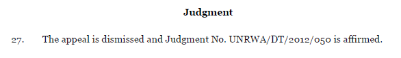 |
modelling | <decision> <division> <heading>Judgment</heading> <paragraph eId="para_27"> <num>27.</num> <content> <p>The appeal is <outcome refersTo="#dismissed"> dismissed</outcome> and Judgment No. UNRWA/DT/2012/050 is affirmed.</p> </content> </paragraph> </division> </decision> |
notes | |
Conclusion
The closing formula <conclusions> </conclusions> is meant to include all concluding material (e.g. signature, registration date, result of the judgment, date, location, original language, etc.). It is placed at the end of the main document, typically before the annexes, if any.
All court decision may end with some or all the information listed below, not necessarily in the same order:
Original version
Date and place
Signature of Judges
Date registered
Registrar
Modelling <conclusions>
For information about element specific usage, see section 1.1.6 <conclusions>.
Examples
source | 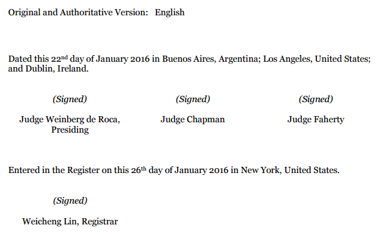 | |
modelling | <conclusions> <container name=""> <p>Original and Authoritative Version: <inline refersTo="#english" name="officialLanguage"> English</inline></p> <p> <docDate date="2016-03-24">Dated this 24th day of March 2016</docDate> in <location refersTo="#newYork">New York</location>, United States.</p> <p>(Signed)<signature> <judge refersTo="#rosalyn.chapman" as="#president">Judge Chapman</judge>, <role refersTo="#president">Presiding</role> </signature> (Signed) <signature> <judge refersTo="#sophia.adinyra">Judge Adinyira</judge> </signature> (Signed) <signature> <judge refersTo="#luis.maria.simon">Judge Simón</judge> </signature> </p> <p>Entered in the Register on <date date="2016-05-13" refersTo="#registrationDate">13th day of May 2016</date> in <location refersTo="#newYork">New York</location>, United States.</p> <p>(Signed) <signature> <person refersTo="#weicheng.lin" as="#registrar">Weicheng Lin</person>, <role refersTo="#registrar">Registrar</role> </signature> </p> </container> </conclusions> | |
notes | ||
Annexes/Attachments
The annexes block <attachments> </attachments> is meant to include all annexes/attachments, especially if there is a dissenting opinion.
Modelling <attachments>
For information about element specific usage, see section 1.1.7 <attachments>.
Examples
source | 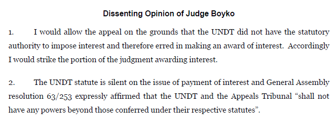 |
modelling | <attachments> <attachment eId="attachment_1"> <doc name="dissentingOpinion"> <meta>…</meta> <preface> <p>Dissenting Opinion of Judge Boyko</p> </preface> <mainBody> <paragraph> <num>1.</num> <content> <p>I would allow the appeal on the grounds that the UNDT did not have the statutory authority to impose interest and therefore erred in making an award of interest. Accordingly I would strike the portion of the judgment awarding interest.</p> </content> </paragraph> </mainBody> </doc> </attachment> </attachments> |
notes | |
99 The author of the markup, the person/organization who take the responsibility for information provided in the different <meta>.